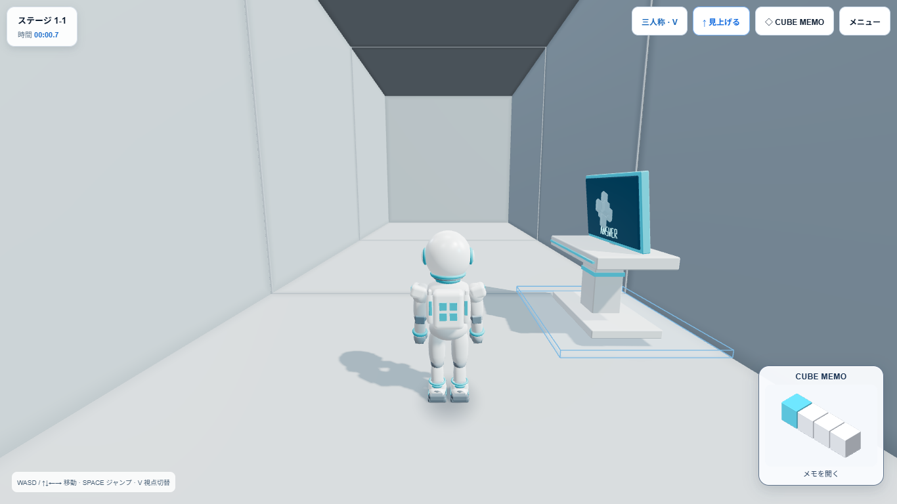
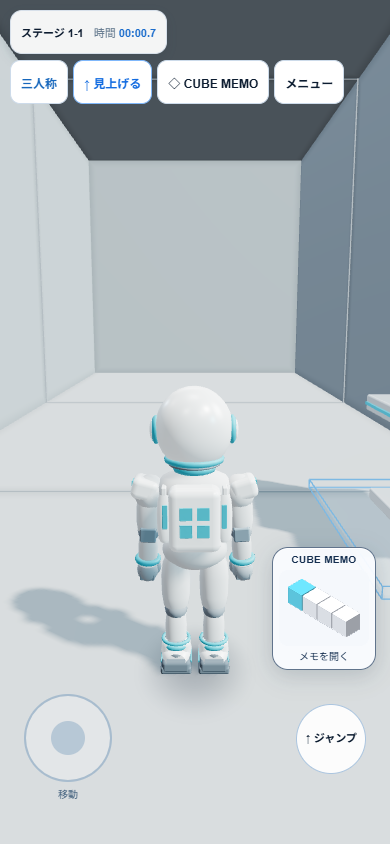
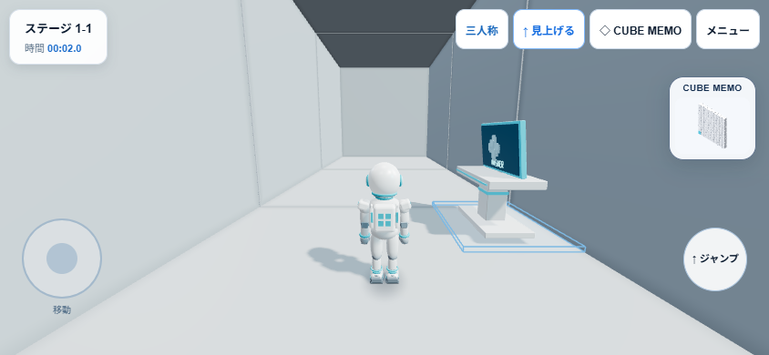

READY FOR USER QA — Stage 1-1のみ
Full Memoと同じStoreを参照。配置・色・ヒント・Undo履歴・保存アルゴリズムは変更していません。Mini専用の固定3Dカメラで全体を自動フィットします。
追加Rendererはセッション中1個を再利用。InstancedMesh、DPR 1、軽量照明のみ。データ変更・リサイズ・表示復帰時だけ描画し、静止中は再描画しません。
Miniをクリック／タップすると既存Full Memoへ。回答画面ではヘッダー内に縮小し、閲覧専用にします。正解演出・結果・Home・他Stageでは非表示です。
1920×1080、1366×768、1024×768、768×1024、390×844、844×390、360×640：HUDとの重複なし、開閉・編集反映・Retry・Reload復元・他Stage非表示を確認。
実タップイベント、縦横切替、最初の不正解→ヒント→Mini同期、9言語の即時更新、正解演出時の非表示を確認。
自動テスト167件PASS。Build PASS。既存500kBチャンク警告は継続。
| 条件 | FPS | Mini静止時再描画 |
|---|---|---|
| Desktop Mini OFF | 60.27 | 0 |
| Desktop Mini ON | 59.96 | 0 |
| Mobile相当・100 Cube | 60.34 | 変更時のみ |
100 Cube：1 draw call／10,800 triangles／1 geometry／0 textures。データ更新＋描画呼び出しCPU 0.5ms（単回参考値、GPU時間ではありません）。追加WebGL context 1。Desktop JS heap OFF約15.2MB／ON約14.9MB（GC変動を含み、長時間リーク保証ではありません）。
実機スマートフォン、YouTubeホスト上のオーバーレイ、長時間メモリ耐久試験は未確認です。FPSは短時間測定であり実機性能の保証ではありません。


